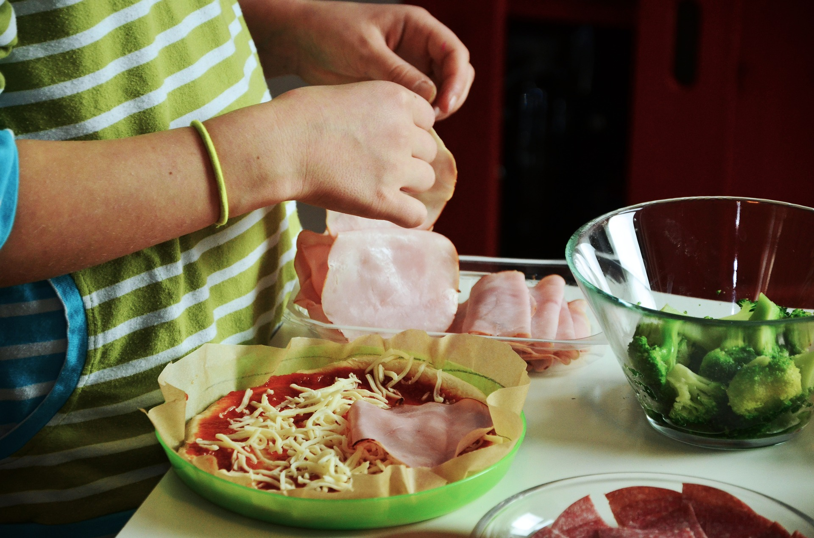

-
Welkom
bij Handelwijzer
-

Dagelijkse activiteiten
naar wens uitvoeren
-
Energie coaching
efficiënt omgaan met je energie
-

Arbeidsreïntegratie
terug aan het werk
bij Handelwijzer
naar wens uitvoeren
efficiënt omgaan met je energie
terug aan het werk
Bij Handelwijzer, eerstelijns ergotherapie praktijk, staat de patiënt centraal en is zorg op maat de standaard.
Bij Handelwijzer staat de samenwerking met u centraal; of u nu patiënt of zorgverlener bent. Wij heten u dan ook graag van harte welkom in onze praktijk.

Iedereen verricht dagelijkse handelingen zoals koken, werken, aankleden of boodschappen doen. Veel van deze handelingen gaan automatisch zonder er bij na te denken. Maar als dit functioneren moeizamer gaat, wordt pas duidelijk hoe ingewikkeld zoiets kan zijn.
Door zorg op maat (advies, coaching, training en hulpmiddelen) maakt ergotherapie het (weer) mogelijk om dagelijkse activiteiten uit te voeren, thuis, op het werk, bij de studie, tijdens sport en vrije tijd.
Ook wanneer u iemand verzorgt als mantelzorger, kunt u de ergotherapeut advies vragen.
Handelwijzer richt zich op patiënten met een breed scala van aandoeningen: reuma, artrose, COPD, MS, Parkinson, dementie, oncologie, CVA/beroerte, neuropsychologische aandoeningen, amputatie, chronische pijn en/of vermoeidheidsklachten, whiplash en SOLK.
Naast het behandelen en begeleiden van particuliere patiënten richten wij ons ook op het bedrijfsleven met re-integratie, werkplekanalyse, advisering en coaching bij andere werk gerelateerde problemen ten gevolge van lichamelijke en/of psychische problemen.
Handelwijzer is een eerstelijns ergotherapie praktijk die hoogwaardige behandeling en begeleiding gaat bieden voor de inwoners van de stedendriehoek Apeldoorn, Deventer en Zutphen. De praktijk start september 2016 en wordt gevestigd in een nader te bepalen gezondheidscentrum.
Wij heten patiënten vanaf a.s. september 2016 graag van harte welkom in onze praktijk. Tevens komen we graag bij patiënten op huisbezoek om de hulpvraag te verhelderen en direct samen aan de slag te gaan.
Maandag t/m vrijdag beschikbaar op de volgende tijden 09:00 - 11:30 en 12:30 - 17:00